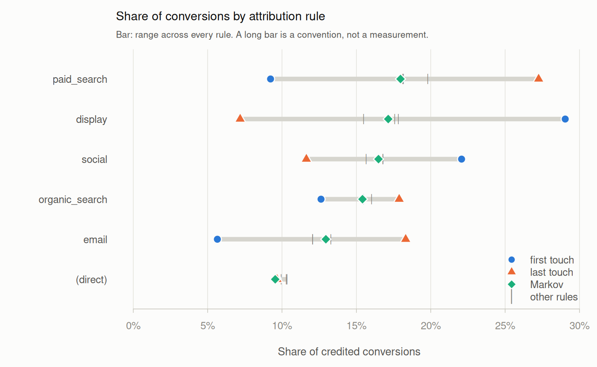
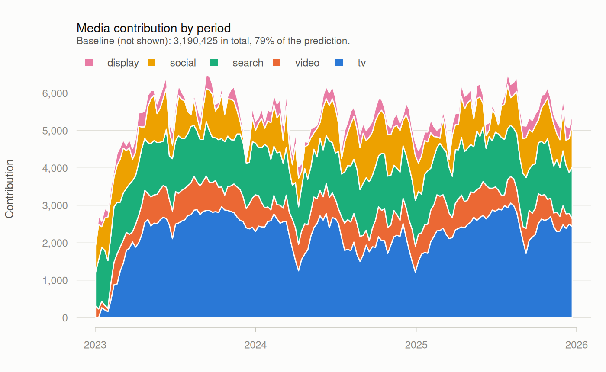

Composable media transforms and attribution path construction for R.
Documentation, walkthroughs and worked examples: https://elkronos.github.io/mediamix/
mediamix turns raw marketing data into model-ready features: media spend into carryover- and saturation-adjusted regressors, and raw event logs into attributed customer journeys.
It is a preprocessing, feature-engineering and reporting package, not a modelling engine. lm(), glmnet and brms fit models better than a marketing package would, and tune does hyperparameter search properly. mediamix does the steps in front of the model — and the decomposition after it — with the methodological details that usually get skipped written into the API.
Installation
mediamix is not yet on CRAN. Install the development version from GitHub:
# install.packages("pak")
pak::pak("elkronos/mediamix")What it offers that the alternatives do not
The full MMM frameworks — Robyn in R; Meridian and PyMC-Marketing in Python — bundle transforms, a model, an optimiser and reporting into one pipeline. That is convenient until you want the transforms without the pipeline: inside your own lm(), brms or glmnet model, a tidymodels workflow, or a Stan model. Robyn in particular reaches its optimiser, nevergrad, through reticulate and a Python installation. mediamix is the transform layer on its own:
-
Adstock that survives resampling.
step_adstock()carries filter state across the train/test boundary, so carryover, saturation and a model penalty can be tuned jointly in onetune_bayes()call with no rows lost. -
Marginal ROI done by counterfactual.
marginal_roi()re-runs the whole transform on a 1% larger budget — the definition used in Google’s MMM research and Meridian — instead of differentiating a curve at one point, which understates slow channels several-fold. -
Carryover selection with honest uncertainty.
tune_carryover()and, for every channel at once inside one model with controls,tune_carryover_joint()score candidates on held-out KPI with forward-only resampling and report the one-standard-error choice alongside the minimum. -
Intervals, not just point estimates.
block_bootstrap()resamples runs of weeks to put intervals on ROI, marginal ROI or anything else you compute. -
Journeys as a first-class step.
build_paths()turns a raw event log into journeys with every construction choice an argument, and accounts for the conversions that filtering leaves unattributable. -
Heuristic and data-driven attribution side by side. Five rule-based credit schemes and an order-1 Markov removal-effect model, with
attribution_spread()reporting how much the answer depends on the choice.
A light dependency footprint
mediamix imports cli for its error messages and data.table for the attribution half, where event logs get large. Nothing else, and no compiled code. recipes, dials and the rest of tidymodels are in Suggests and registered conditionally, so the transforms work equally well from a Stan or brms workflow that will never touch them.
library(mediamix)
adstock_geometric(c(100, 0, 0, 0, 0, 0), decay = 0.5)
#> [1] 50.0000 25.0000 12.5000 6.2500 3.1250 1.5625The half-life vocabulary
Practitioners say “television works for about three weeks”. They do not say “television has a decay coefficient of 0.7937”. The package translates, and uses one vocabulary throughout:
theta <- decay_from_half_life(3) # 0.7937005
half_life(theta) # 3
effective_window(theta, 0.90) # 10 periodsThat last line is how you decide whether your data can identify a carryover this long: a decay implying a 40-week effective window on 104 weeks of data cannot be estimated, however confident the cross-validation looks.
Journey construction as a first-class step
Attribution tools such as ChannelAttribution consume "a > b > c" strings with conversion counts attached; producing those strings is left to the analyst. That step usually ends up as a group_by() and a paste(collapse = " > "), and that loses a great deal.
On the package’s 20,799-event synthetic log:
| journeys | mean length | |
|---|---|---|
| naive one-path-per-customer | 5,400 | 3.85 |
| split on conversion | 6,137 | 3.39 |
| + 30-day inactivity gap | 6,158 | 3.38 |
| + collapse consecutive duplicates | 6,158 | 2.81 |
14% more journeys, 27% shorter. Journey counts and lengths feed a Markov transition matrix directly, so those are not rounding differences.
data(mm_events)
paths <- build_paths(
mm_events,
id = "customer_id", channel = "channel", timestamp = "timestamp",
conversion = "conversion", value = "value",
lookback = 30, # or read it off conversion_lag()
split_on = c("conversion", "gap"), gap = 30,
collapse_repeats = TRUE,
keep_null_paths = TRUE, # Markov removal effects need these
direct = "label"
)build_paths() handles the seven things that go wrong between an event log and a set of journeys — journey splitting, lookback windows, non-converting paths, direct/none/missing channels, consecutive duplicates, deterministic tie-breaking, and accounting for conversions that filtering leaves unattributable. Each is an argument, not an assumption.
That last one matters more than it sounds. Dropping direct traffic can strip a converting journey of every touchpoint it had. mediamix fixes the conversion facts before any filtering, so those conversions are counted and reported as conversions_unattributable rather than quietly shrinking the denominator.
The spread is the finding
Any single credit rule gives you a number. Several give you the range that number could have been. attribute() runs five heuristic rules and an order-1 Markov removal-effect model (Anderl et al., 2016):
attribution_spread(attribute(paths))
#> channel min_share max_share mean_share spread first_last_ratio
#> 1 display 0.07187158 0.2904050 0.1742354 0.2185334 4.0406091
#> 2 paid_search 0.09230208 0.2725283 0.1851354 0.1802262 0.3386881
#> 3 email 0.05654870 0.1831448 0.1227534 0.1265961 0.3087649
#> 4 social 0.11638088 0.2207224 0.1658973 0.1043415 1.8965517
Display’s share runs from 7% to 29% depending only on the convention chosen. That channel has not been measured; it has been assigned a number. The Markov model lands inside the heuristic range here, which is typical: a data-driven convention narrows the argument but does not end it.
The conceptual spine
Adstock takes one impulse of spend and spreads its effect forward with geometric decay. Time-decay attribution takes one conversion and spreads its credit backward with the same kernel. Same arithmetic, opposite arrow — and in the API, the same decay argument:
# One evenly spaced four-touch journey
j <- data.frame(
cust = "a", channel = c("display", "social", "email", "paid_search"),
ts = as.POSIXct("2026-01-01", tz = "UTC") + (0:3) * 86400,
conv = c(0, 0, 0, 1)
)
one <- build_paths(j, id = "cust", channel = "channel",
timestamp = "ts", conversion = "conv")
adstock_weights(max_lag = 4, decay = 0.5)
#> [1] 0.53333333 0.26666667 0.13333333 0.06666667
rev(credit_time_decay(one, decay = 0.5)$credit)
#> [1] 0.53333333 0.26666667 0.13333333 0.06666667
all.equal(adstock_weights(4, 0.5), rev(credit_time_decay(one, decay = 0.5)$credit))
#> [1] TRUENot analogous. Identical — exactly, for the geometric kernel on evenly spaced touches. See vignette("spine"), which also sets out where the symmetry stops.
Carryover parameters chosen against the KPI
It is tempting to choose decay by asking which transformed series is best-behaved. That criterion has no dependent variable in it, so it ranks filters by how hard they smooth rather than by anything about the outcome.
tune_carryover() scores each candidate by how well a model you supply predicts held-out KPI:
tuned <- tune_carryover(spend, kpi, fit_fn = my_fit, predict_fn = my_predict,
max_lags = Inf, decays = seq(0.05, 0.95, by = 0.05),
scheme = "rolling_origin")
tuned$best # the minimum of the cross-validation curve
tuned$best_1se # the shortest carryover within one standard error of itWith several channels, tune them together so none is credited with another’s effect — and pass the controls, which stay aligned with every split:
data(mm_weekly)
north <- mm_weekly[mm_weekly$geo == "north", ]
channels <- c("tv", "video", "search", "social", "display")
controls <- data.frame(week = seq_len(nrow(north)), price = north$price,
seasonality = north$seasonality,
holiday = north$holiday)
joint <- tune_carryover_joint(north[channels], north$revenue,
controls = controls)
joint$best$decay
#> [1] 0.80 0.50 0.65 0.55 0.60 # truth: 0.85 0.70 0.15 0.45 0.55
plot(joint) # each channel's cross-validation profileSearch is the miss, and its cross-validation profile is almost flat: the data does not identify its carryover, which plot(joint) makes visible and a bare point estimate would hide.
The test suite generates data from a known decay and requires it to be recovered to within one grid step at every value tested. Carryover is weakly identified in most real data, which is why the one-standard-error rule (Hastie, Tibshirani and Friedman, 2009) is reported alongside. See vignette("carryover"), which also shows how much harder this gets with five correlated channels and 156 weeks, and why that is a fact about the model rather than about the objective.
Recipe steps that survive the train/test boundary
recipes::step_lag() emits NA at a prep/bake boundary, silently, and its documented remedy changes the row count — which breaks tune_grid().
step_adstock() stores filter state instead of rows. Geometric adstock is an IIR filter whose entire memory is one number per series, so prep() keeps one double per column per group and bake() warm-starts from it. Row count and order are preserved unconditionally.
recipe(revenue ~ ., data = train) |>
step_adstock(all_of(channels), index = "date", by = "geo", decay = tune()) |>
step_saturation(all_of(channels), half_max = tune(), shape = tune())bake() classifies the new data against what prep() saw — contiguous, overlapping, gapped, an unseen group, or an unknown period — and warm-starts only when that is correct, warning loudly otherwise. This is what makes joint tuning of carryover, saturation and model penalty possible in one tune_bayes() call. Each step takes one decay, so add one step per channel to give every channel its own tunable carryover.
Marginal return on spend
Average ROI is a scorecard; marginal ROI is the decision variable. marginal_roi() computes it the way the Bayesian MMM literature defines it — extra response from a 1% larger budget, divided by the extra spend — by re-running carryover and saturation rather than differentiating a curve:
marginal_roi(north$tv, coefficient = 6013,
adstock = list(decay = 0.85),
saturation = list(half_max = 2250, shape = 1.6))
#> spend contribution roi mroi
#> 1 266978 349634.4 1.3096 1.253432The tempting shortcut — the curve’s slope times the kernel’s first weight — gives 0.21 for this channel: it counts only the week of spend and discards the 85% of the effect that arrives later.
Every result has a plot() method in one consistent, colour-vision-checked style — here, the decomposition that contributions() returns:

And block_bootstrap() puts intervals on any of it. On mm_weekly they are wide, which is the point: see the budget walkthrough for how that changes a recommendation.
Scope
| In | Out | Because |
|---|---|---|
| Adstock and saturation transforms | Model fitting |
lm, glmnet, brms already exist |
| Carryover selection by cross-validation | Bespoke optimisers |
tune does this properly |
| Journey construction from event logs | Higher-order Markov chains |
ChannelAttribution does them in C++ |
| Rule-based credit and order-1 Markov removal effects | Causal incrementality | Requires experiments, not logs |
| Contribution, ROI and counterfactual marginal ROI | Budget optimisation | Deserves its own design pass |
| Media data diagnostics | Generic regression diagnostics |
broom, performance
|
as_channel_paths() exports journeys straight into ChannelAttribution’s format, for higher-order models and very large path tables.
A caveat worth stating
Rule-based attribution is a bookkeeping convention, not a causal estimate. It divides observed conversions among observed touchpoints by a rule you chose; it cannot tell you what would have happened if a channel had not run, because that outcome is not in the log. Only an experiment answers that.
Vignettes
-
vignette("mediamix")— getting started: raw data to contributions and ROI -
vignette("journeys")— building journeys from event logs -
vignette("carryover")— choosing decay and lag by cross-validation -
vignette("tidymodels")— joint tuning of transform and model parameters -
vignette("spine")— carryover and credit are the same idea
The website adds articles that are not shipped with the package: an end-to-end budget walkthrough, the methods behind each function with their references, and a comparison with other MMM and attribution tools.
References
Anderl, E., Becker, I., von Wangenheim, F. and Schumann, J. H. (2016). Mapping the customer journey: Lessons learned from graph-based online attribution modeling. International Journal of Research in Marketing, 33(3), 457–474.
Broadbent, S. (1979). One way TV advertisements work. Journal of the Market Research Society, 21(3), 139–166.
Hastie, T., Tibshirani, R. and Friedman, J. (2009). The Elements of Statistical Learning (2nd ed.). Springer.
Hill, A. V. (1910). The possible effects of the aggregation of the molecules of haemoglobin on its dissociation curves. The Journal of Physiology, 40, iv–vii.
Jin, Y., Wang, Y., Sun, Y., Chan, D. and Koehler, J. (2017). Bayesian methods for media mix modeling with carryover and shape effects. Google Inc.